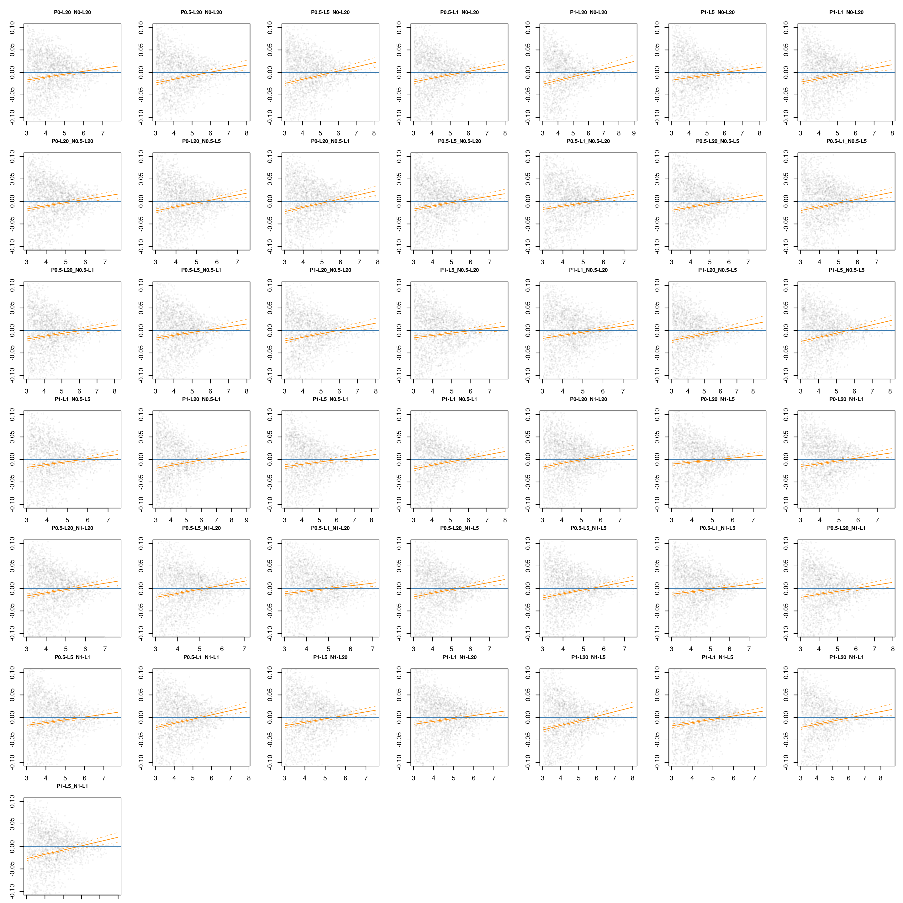

library(PhyloSim)
library(parallel)
library(dplyr)
library(tidyverse)
library(lattice)
library(ggplot2)
library(metafor)
library(MASS)
# root <- "~/Uni/Master/MA/" # work from local machine
root <- "~/cyber_synch/" # work from uni bayreuth serverPhyloSim Changes
Here, I reduced the base mortality and the fitness independent mortality. This increases the effect of DD on mort change
1 Quantification of stabilazation: Mortality change for + 1 conspecific individual
According to Hülsmann et al. 2024 I quantify the effect of stab CDD by - fitting a binomial model - calculate probability of mortality without conspecific neighbors (= mort0) - calculate probability of mortality with one conspecific neighbor (= mort1) - calcualte change in probability (mortChange = mort1 - mort0)
1.1 Data preparation
Note on fitness base mortality ratio (fbmr): it skips fitness dependent death every fbmr’th step. E.g., fbmr = 10 would cause always death, independent of fitness. In this batch, it is set to 10. In the next, to 3000. We’ll see if fbmr changes the mortChange coefficient dramatically. But, first things first.
# load in runs with exp kernel
runs_iii <- readRDS(paste0(root, "/local/runs/mstr/20250807/runs_iii.rds"))Next, we
- calculate the numbers of conspecific neighbors
- asess if an individuls dies in the consequent generation. Therefore, we ran the simulations with sort(c(seq(x,y), seq(x,y)+1)). Again, we assess death after each period in time trough the immediately next generation (e.g, focal generation 1000 -> individuals dead at 1001 ?)
# get conspecific neighbors and proper naming
runs_iii <- getConNeigh(runs_iii)Next, we convert the matrix data into tabular data. With the argument detailedParams we include the parameter settings a seperate cols. We save the tabular data.
# convert matrices to tabular data. This is done parallel, as it takes longer
cl <- makeCluster(length(runs_iii))
clusterExport(cl, c("getMatToTab", "runs_iii"))
tab_iii <- parLapply(cl = cl, X = runs_iii, fun = function(x) getMatToTab(x, detailedParams = TRUE))
# saveRDS(tab_iii, paste0(root, "local/runs/mstr/20250807/tab_iii.rds"))We only keep important/varying parameters in the naming. Fixed params are excluded.
tab_iii <- readRDS(paste0(root, "local/runs/mstr/20250807/tab_iii.rds"))namesShort <- names(tab_iii) %>%
stringr::str_remove("_disp.+") %>%
stringr::str_remove("Cut1") %>%
stringr::str_remove("Cut1") %>%
stringr::str_replace("pdd", "P") %>%
stringr::str_replace("ndd", "N") %>%
stringr::str_replace_all("Var", "-L")Now, we delete every second generation. Remember, we had to calculate the death in the consequent generation. After doing so, the generation x + 1 is no longer needed and is discarded.
# keep only first timespot in census
tab_iiix <- lapply(tab_iii, function(x){
res <- x %>%
filter(census %% 2 == 0,
census > 50000) # this must be checked against the SR over time plots: when is eq. reached? The more data the better, because it narrows the ci in the final plot
return(res)
})
names(tab_iiix) <- namesShort1.2 Classical Statistical Analysis: glm
1.2.1 GLM - Bootstrap
We use a binomial glm and calculate the change in mortality for (one conspecific neighbor) - (no conspecific neighbors). As also described in @ref(sec-mortality-change). To calculate uncertainties, we use a non-parametric boot strap approach, because we want to aknowledge error propagation of each term.
boot_mort_change <- function(x, B = 500) {
boot_vals <- numeric(B)
for (i in seq_len(B)) {
xb <- x[sample(nrow(x), replace = TRUE), ]
fm <- tryCatch(glm(mortNextGen ~ con, family = binomial(), data = xb),
error = function(e) return(NA))
if (is.na(fm)[1]) {
boot_vals[i] <- NA
} else {
est <- coef(fm)
mort0 <- plogis(est["(Intercept)"])
mort1 <- plogis(est["(Intercept)"] + est["con"])
boot_vals[i] <- mort1 - mort0
}
}
ci <- quantile(boot_vals, c(0.025, 0.975), na.rm = TRUE) # allows error propagation
point <- mean(boot_vals, na.rm = TRUE)
return(c(mort_change = point, ci_lower = ci[1], ci_upper = ci[2]))
}cl <- makeCluster(length(tab_iiix))
clusterExport(cl, c("boot_mort_change", "tab_iiix"))
BS <- parLapply(cl = cl, X = tab_iiix, fun = function(x) boot_mort_change(x, B = 500))BSx <- do.call(cbind, BS) %>% as.data.frame()
# saveRDS(BSx, "~/cyber_synch/local/summary/BSiii.rds")BSx <- readRDS(paste0(root, "local/summary/BSiii.rds"))
names(BSx) <- namesShort
BSx <- BSx %>% t() %>% as.data.frame() %>%
rownames_to_column("param") %>%
mutate(PL = as.numeric(str_match(string = param, pattern = "P[0-9.]+-L([0-9]+)")[,2]),
NL = as.numeric(str_match(string = param, pattern = "N[0-9.]+-L([0-9]+)")[,2]),
N = as.numeric(str_match(string = param, pattern = "N([0-9.]+)-L")[,2]),
P = as.numeric(str_match(string = param, pattern = "P([0-9.]+)-L")[,2])
) %>%
dplyr::select(-param)1.2.2 Visualization
par(mar = c(13,4,1,1))
x <- 1:nrow(BSx)
y <- as.numeric(BSx$mort_change)
ci_lower <- as.numeric(BSx$`ci_lower.2.5%`)
ci_upper <- as.numeric(BSx$`ci_upper.97.5%`)
plot(y = y, x = x, ylab = "mortChange", xlab = "", xaxt = "n", ylim = range(ci_lower, ci_upper))
axis(1, at = x, labels = namesShort, las = 2)
arrows(x0 = x, y0 = ci_lower,
x1 = x, y1 = ci_upper,
angle = 90, code = 3, length = 0.05)# The next plot is not ready yet. Next runs without skipping param combinations. makes it much simpler
BSx_long <- BSx %>%
mutate(N = as.numeric(N), P = as.numeric(P)) %>%
pivot_longer(c(N, P), names_to = "series", values_to = "level") %>%
mutate(level = factor(level, levels = c(0, 0.5, 1)),
series = factor(series, levels = c("N","P")))
ggplot(BSx_long, aes(x = level, y = mort_change)) +
geom_line(aes(group = series, color = series, linetype = series)) +
geom_point(aes(color = series, linetype = series), size = 2) +
geom_errorbar(aes(ymin = `ci_lower.2.5%`, ymax = `ci_upper.97.5%`, color = series, linetype = series),
width = 0.15) +
facet_wrap(~ paste("PL =", PL, ", NL =", NL), scales = "free_x", ncol = 3) +
labs(
title = "Mortality Change by N and P",
subtitle = "Two series (N, P) over factorized levels 0, 0.5, 1",
x = "Level",
y = "Mortality Change",
color = NULL,
linetype = NULL
) +
theme_minimal() +
theme(
axis.text.x = element_text(angle = 0, hjust = 0.5),
strip.text = element_text(size = 10, face = "bold"),
legend.position = "bottom"
) +
scale_x_discrete(drop = FALSE) +
scale_color_viridis_d() +
scale_linetype_manual(values = c("N" = 1, "P" = 2)) +
guides(color = guide_legend(ncol = 2), linetype = guide_legend(ncol = 2))Next, we show the effect of the density strength and variance on the mortality change
# also these plots are not ready yet: e.g., when plotting L, PDD Lambda 20 gives highest MC. This is because pDD = 0 there. So I need to exclude the DD = 0 cases from the Lmabda plot!
# Plot 1: change in mortality vs NDD/PDD strength
ggplot(BSx, aes(x = factor(N), y = factor(P), fill = mort_change)) +
geom_point(shape = 21, size = 3, position = position_jitter(width = 0.3, height = 0.3)) +
scale_fill_viridis_c(name = "change in\nmortality") +
theme_minimal() +
labs(x = "NDD Strength", y = "PDD Strength")# Plot 2: change in mortality vs NDD/PDD variance
ggplot(BSx, aes(x = factor(NL), y = factor(PL), fill = mort_change)) +
geom_point(shape = 21, size = 3, position = position_jitter(width = 0.3, height = 0.3)) +
scale_fill_viridis_c(name = "change in\nmortality") +
theme_minimal() +
labs(x = "NDD Lambda", y = "PDD Lambda")1.3 Mortality change species-wise: correaltion between species abundance and change in mortality
Literature often finds a correlation between stabilizing strength and the abundance of a species. To test this, we redo the analysis but now species-wise and add abundance and “NperCen”, a correct abundance measure, to the data.
1.3.1 Data preparation
Additionally, besides using abundance as metric for the correaltion(abund. , stabilization), we correct for the number of generations, where a species is present. E.g, if specId 1 survives long enough, it will be present in 3 generation \(x_{n}, x_{n+1}, x_{n+2}\). This creates a bias. We correct by dividing the total abundance (throughout the whole time series) by number of generations, the species is present (E.g., \(\frac{5041}{3}\)). This new metric is called NbyCen. Finally, we join all information together.
Also, we filter out very rare species, to increase statistical power.
# calculate number of censii in which species occur
NbyCen <- lapply(tab_iiix, function(x){
res <- x %>%
group_by(specId) %>%
summarise(n_census = n_distinct(census))
return(res)
})
# add abundances and (abundances / number of censii in which they occur)
tab_iiixx <- lapply(seq_along(tab_iiix), function(i){
res <- tab_iiix[[i]] %>%
group_by(specId) %>%
mutate(abund = n()) %>%
left_join(NbyCen[[i]], by = "specId") %>%
mutate(NperCen = abund / n_census) %>%
ungroup()
return(res)
})
tab_iiiS <- lapply(tab_iiixx, function(x){
res <- x %>%
filter(abund > 20) # need species with enough variation in con for the model to estimate an effect
return(res)
})1.3.2 Classical Statistical Analysis
cl <- makeCluster(length(tab_iiiS))
mort_changeS <- parLapply(cl, tab_iiiS, function(x) {
i <- 1 # index
len <- length(unique(x$specId))
res <- data.frame(specId = rep(NA, len),
abund = rep(NA, len),
NperCen = rep(NA, len),
mort_change = rep(NA, len))
for (sID in unique(x$specId)) {
fm <- glm(formula = "mortNextGen ~ con",
family = binomial(),
data = x[which(x$specId == sID), ])
sfm <- summary(fm)$coefficients
mort0 <- plogis(sfm["(Intercept)", "Estimate"])
mort1 <- plogis(sfm["con", "Estimate"] * 1 + sfm["(Intercept)", "Estimate"])
res$mort_change[i] <- (mort1 - mort0)
res$abund[i] <- x$abund[which(x$specId == sID)][1]
res$NperCen[i] <- x$NperCen[which(x$specId == sID)][1]
res$specId[i] <- sID
i <- i + 1
}
return(res)
})
# Stop the cluster
stopCluster(cl)# add regressionline mc ~ abund
mcS <- lapply(mort_changeS, function(x){
fm <- lm(mort_change ~ log(abund), data = x)
return(fm)
})
mcSx <- lapply(mort_changeS, function(x){
fm <- lm(mort_change ~ log(NperCen), data = x)
return(fm)
})# predictions
mcSP <- lapply(seq_along(mcS), function(x){
# create prediction data
newDF <- data.frame(abund = seq(min(mort_changeS[[x]]$abund), max(mort_changeS[[x]]$abund), length = 101))
preds <- predict(mcS[[x]], newDF, se.fit = TRUE)
return(as.data.frame(cbind(newDF, preds)))
})
mcSxP <- lapply(seq_along(mcSx), function(x){
# create prediction data
newDF <- data.frame(NperCen = seq(min(mort_changeS[[x]]$NperCen), max(mort_changeS[[x]]$NperCen), length = 101))
preds <- predict(mcSx[[x]], newDF, se.fit = TRUE)
return(as.data.frame(cbind(newDF, preds)))
})1.3.2.1 Visualization
names <- names(tab_iiix) %>% stringr::str_remove("_fbmr10")
par(mfrow = c(7,7), mar = c(1,3,3,1))
invisible(sapply(seq_along(mcSP), function(i){
x <- mort_changeS[[i]]
plot(x = log(x$abund), y = x$mort_change,
ylim = c(-0.1, 0.1), xlab = "abund", ylab = "mortality\nchange",
cex = .3, col = rgb(0,0,0,.05),
main = names[i], cex.main = .8)
p <- mcSP[[i]]
lines(x = log(p$abund), y = p$fit, lty = 1, lwd = 1, col = "darkorange")
lines(x = log(p$abund), y = p$fit - p$se.fit * 2, lty = 2, lwd = .5, col = "darkorange")
lines(x = log(p$abund), y = p$fit + p$se.fit * 2, lty = 2, lwd = .5, col = "darkorange")
abline(h = 0, col = "steelblue")
}))
par(mfrow = c(7,7), mar = c(1,3,3,1))
invisible(sapply(seq_along(mcSxP), function(i){
x <- mort_changeS[[i]]
plot(x = log(x$NperCen), y = x$mort_change,
ylim = c(-0.1, 0.1), xlab = "NperCen", ylab = "mortality\nchange",
cex = .3, col = rgb(0,0,0,.05),
main = names[i], cex.main = .8)
p <- mcSxP[[i]]
lines(x = log(p$NperCen), y = p$fit, lty = 1, lwd = 1, col = "darkorange")
lines(x = log(p$NperCen), y = p$fit - p$se.fit * 2, lty = 2, lwd = .5, col = "darkorange")
lines(x = log(p$NperCen), y = p$fit + p$se.fit * 2, lty = 2, lwd = .5, col = "darkorange")
abline(h = 0, col = "steelblue")
}))1.3.3 Metafor analysis: correcting for uncertainty
tab_iiix <- lapply(tab_iii, function(x){
res <- x %>%
filter(census %% 2 == 0,
census > 50000) # this must be checked against the SR over time plots: when is eq. reached? The more data the better, because it narrows the ci in the final plot
return(res)
})
names(tab_iiix) <- namesShort# calculate number of censii in which species occur
NbyCen <- lapply(tab_iiix, function(x){
res <- x %>%
group_by(specId) %>%
summarise(n_census = n_distinct(census))
return(res)
})
# add abundances and (abundances / number of censii in which they occur)
tab_iiixx <- lapply(seq_along(tab_iiix), function(i){
res <- tab_iiix[[i]] %>%
group_by(specId) %>%
mutate(abund = n()) %>%
left_join(NbyCen[[i]], by = "specId") %>%
mutate(NperCen = abund / n_census) %>%
ungroup()
return(res)
})
tab_iiiS <- lapply(tab_iiixx, function(x){
res <- x %>%
filter(abund > 30) # need species with enough variation in con for the model to estimate an effect
return(res)
})cl <- makeCluster(length(tab_iiiS))
mcS_err <- parLapply(cl, tab_iiiS, function(x) {
specIDs <- unique(x$specId)
res <- vector("list", length(specIDs))
i <- 1
for (sID in specIDs) {
dat <- x[x$specId == sID, ]
mod <- glm(mortNextGen ~ con, data = dat, family = binomial())
sfm <- summary(mod)$coefficients
vc <- vcov(mod)[c("(Intercept)", "con"), c("(Intercept)", "con")]
mort0 <- plogis(coef(mod)[1])
mort1 <- plogis(coef(mod)[1] + coef(mod)[2])
res[[i]] <- list(
specId = sID,
abund = dat$abund[1],
mort_change = mort1 - mort0,
coef = coef(mod)[c(1,2)],
vcov = vc
)
i <- i + 1
}
return(res)
})
# Stop the cluster
stopCluster(cl)1.4 compute variance of the marginal effect through a “posterior” simulation
mcS_err_sim <- lapply(mcS_err, function(x){
lapply(x, function(y){
sim <- mvrnorm(n = 100, mu = c(y$coef[1], y$coef[2]), Sigma = y$vcov)
mort0 <- plogis(sim[, 1])
mort1 <- plogis(sim[, 1] + sim[, 2])
mort_diff <- mort1 - mort0
return(data.frame(
abund = y$abund,
specId = y$specId,
mean = mean(mort_diff),
se = sd(mort_diff),
ci_low = quantile(mort_diff, 0.025),
ci_high = quantile(mort_diff, 0.975)
))
})
})1.5 unlist inner lists and add log abund
m4 <- lapply(mcS_err_sim, function(group) {
do.call(rbind, group)
})
m4 <- lapply(m4, function(group) {
row.names(group) <- NULL
group <- group %>%
mutate(log_N = log(abund))
return(group)
})1.6 fitting model
dat_meta <- lapply(m4, function(x) {
escalc(measure = "GEN", yi = mean, sei = se, slab = specId, data = x)
})# Detect available cores and create a cluster
cl <- makeCluster(length(dat_meta))
# Export needed objects and packages to the workers
clusterExport(cl, varlist = c("dat_meta"), envir = environment())
# Run in parallel
metamod <- parLapply(cl, dat_meta, function(x) {
metafor::rma(
yi = yi,
vi = vi,
mods = ~ log_N,
method = "REML",
data = x
)
})
# Stop cluster
stopCluster(cl)
names(metamod) <- namesShort# saveRDS(metamod, paste0(root, "local/runs/mstr/20250807/metamodiii.rds"))
# saveRDS(dat_meta, paste0(root, "local/runs/mstr/20250807/dat_metaiii.rds"))
metamod <- readRDS(paste0(root, "local/runs/mstr/20250807/metamodiii.rds"))
dat_meta <- readRDS(paste0(root, "local/runs/mstr/20250807/dat_metaiii.rds"))summary(metamod$`P0-L20_N0-L20`)
summary(metamod$`P0-L20_N0.5-L5`)plot(metamod$`P0-L20_N0-L20`)
plot(metamod$`P1-L20_N0-L20`)1.7 predictions
pred <- lapply(dat_meta, function(x){
expand_grid(log_N = seq(min(x$log_N, na.rm = TRUE),
max(x$log_N, na.rm = TRUE),
length.out = 50))
})
pred <- lapply(pred, function(x){
x$abund <- exp(x$log_N)
return(x)
})
# Bind predictions to dataframe
pred <- lapply(seq_along(pred), function(i){
x <- pred[[i]]
y <- metamod[[i]]
return(cbind(x, predict(object = y, newmods = x$log_N)))
})
names(pred) <- namesShort# Function to extract parameters from names
extract_params <- function(name) {
# Extract P, N, and L values from names like "P0.5-L20_N0.5-L5"
p_part <- sub("_.*", "", name) # Get part before underscore
n_part <- sub(".*_", "", name) # Get part after underscore
# Extract P and PL values
p_val <- as.numeric(sub("-.*", "", sub("P", "", p_part)))
pl_val <- as.numeric(sub(".*-L", "", p_part))
# Extract N and NL values
n_val <- as.numeric(sub("-.*", "", sub("N", "", n_part)))
nl_val <- as.numeric(sub(".*-L", "", n_part))
return(data.frame(P = p_val, PL = pl_val, N = n_val, NL = nl_val))
}
# Convert pred list to dataframe with parameters
pred_df <- do.call(rbind, lapply(seq_along(pred), function(i) {
df <- pred[[i]]
params <- extract_params(names(pred)[i])
df$scenario <- names(pred)[i]
df$P <- params$P
df$PL <- params$PL
df$N <- params$N
df$NL <- params$NL
return(df)
}))
# Assume predict() returns fitted values and confidence intervals
# Adjust column names based on your actual metafor predict output
colnames(pred_df)[colnames(pred_df) == "pred"] <- "fitted"
if("ci.lb" %in% colnames(pred_df)) {
pred_df$ci_lower <- pred_df$ci.lb
pred_df$ci_upper <- pred_df$ci.ub
} else {
# If no CI columns, create dummy ones
pred_df$ci_lower <- pred_df$fitted - 0.1
pred_df$ci_upper <- pred_df$fitted + 0.1
}
# Create the null reference (P0, N0)
null_data <- pred_df[pred_df$P == 0 & pred_df$N == 0, ]
# Function to create plots with null reference
create_plot_with_null <- function(data, title) {
ggplot() +
# Add null reference line
geom_ribbon(data = null_data, aes(x = abund, ymin = ci_lower, ymax = ci_upper),
alpha = 0.2, fill = "black") +
geom_line(data = null_data, aes(x = abund, y = fitted),
color = "black", linetype = "dashed", size = 1) +
# Add treatment lines
geom_ribbon(data = data, aes(x = abund, ymin = ci_lower, ymax = ci_upper,
fill = factor(paste0("L", PL))), alpha = 0.3) +
geom_line(data = data, aes(x = abund, y = fitted, color = factor(paste0("L", PL))),
size = 1) +
scale_x_log10() +
labs(title = title, x = "Abundance", y = "Mortality Change",
color = "P Lambda", fill = "P Lambda") +
theme_minimal() +
theme(legend.position = "bottom")
}
# 1. Panel with N0 and P0.5 (multiple L values for P)
p1_data <- pred_df[pred_df$N == 0 & pred_df$P == 0.5, ]
p1 <- create_plot_with_null(p1_data, "N0, P0.5 - Varying P Lambda")Warning: Using `size` aesthetic for lines was deprecated in ggplot2 3.4.0.
ℹ Please use `linewidth` instead.# 2. Panel with N0 and P1 (multiple L values for P)
p2_data <- pred_df[pred_df$N == 0 & pred_df$P == 1, ]
p2 <- create_plot_with_null(p2_data, "N0, P1 - Varying P Lambda")
# 3. Panel with P0 and N0.5 (multiple L values for N)
p3_data <- pred_df[pred_df$P == 0 & pred_df$N == 0.5, ]
p3 <- ggplot() +
geom_ribbon(data = null_data, aes(x = abund, ymin = ci_lower, ymax = ci_upper),
alpha = 0.2, fill = "black") +
geom_line(data = null_data, aes(x = abund, y = fitted),
color = "black", linetype = "dashed", size = 1) +
geom_ribbon(data = p3_data, aes(x = abund, ymin = ci_lower, ymax = ci_upper,
fill = factor(paste0("L", NL))), alpha = 0.3) +
geom_line(data = p3_data, aes(x = abund, y = fitted, color = factor(paste0("L", NL))),
size = 1) +
scale_x_log10() +
labs(title = "P0, N0.5 - Varying N Lambda", x = "Abundance", y = "Mortality change",
color = "N Lambda", fill = "N Lambda") +
theme_minimal() +
theme(legend.position = "bottom")
# 4. Panel with P0 and N1 (multiple L values for N)
p4_data <- pred_df[pred_df$P == 0 & pred_df$N == 1, ]
p4 <- ggplot() +
geom_ribbon(data = null_data, aes(x = abund, ymin = ci_lower, ymax = ci_upper),
alpha = 0.2, fill = "black") +
geom_line(data = null_data, aes(x = abund, y = fitted),
color = "black", linetype = "dashed", size = 1) +
geom_ribbon(data = p4_data, aes(x = abund, ymin = ci_lower, ymax = ci_upper,
fill = factor(paste0("L", NL))), alpha = 0.3) +
geom_line(data = p4_data, aes(x = abund, y = fitted, color = factor(paste0("L", NL))),
size = 1) +
scale_x_log10() +
labs(title = "P0, N1 - Varying N Lambda", x = "Abundance", y = "Mortality change",
color = "N Lambda", fill = "N Lambda") +
theme_minimal() +
theme(legend.position = "bottom")
# 5. Panel with N0.5 and P0.5 (4 lines: null + fixed P0.5 with varying NL)
p5_data <- pred_df[pred_df$N == 0.5 & pred_df$P == 0.5, ]
p5 <- ggplot() +
geom_ribbon(data = null_data, aes(x = abund, ymin = ci_lower, ymax = ci_upper),
alpha = 0.2, fill = "black") +
geom_line(data = null_data, aes(x = abund, y = fitted),
color = "black", linetype = "dashed", size = 1.2) +
geom_ribbon(data = p5_data, aes(x = abund, ymin = ci_lower, ymax = ci_upper,
fill = paste0("PL", PL, "_NL", NL)), alpha = 0.3) +
geom_line(data = p5_data, aes(x = abund, y = fitted,
color = paste0("PL", PL, "_NL", NL)), size = 1) +
scale_x_log10() +
labs(title = "N0.5, P0.5 - Varying N and P Lambda",
x = "Abundance", y = "Mortality change",
color = "Treatment", fill = "Treatment") +
theme_minimal() +
theme(legend.position = "bottom")
# 6. Panel with N1 and P1 (4 lines: null + fixed P1 with varying NL)
p6_data <- pred_df[pred_df$N == 1 & pred_df$P == 1, ]
p6 <- ggplot() +
geom_ribbon(data = null_data, aes(x = abund, ymin = ci_lower, ymax = ci_upper),
alpha = 0.2, fill = "black") +
geom_line(data = null_data, aes(x = abund, y = fitted),
color = "black", linetype = "dashed", size = 1.2) +
geom_ribbon(data = p6_data, aes(x = abund, ymin = ci_lower, ymax = ci_upper,
fill = paste0("PL", PL, "_NL", NL)), alpha = 0.3) +
geom_line(data = p6_data, aes(x = abund, y = fitted,
color = paste0("PL", PL, "_NL", NL)), size = 1) +
scale_x_log10() +
labs(title = "N1, P1 - Varying N and P Lambda",
x = "Abundance", y = "Mortality change",
color = "Treatment", fill = "Treatment") +
theme_minimal() +
theme(legend.position = "bottom")
# 1) Global ranges
x_range <- range(pred_df$abund[pred_df$abund > 0 & is.finite(pred_df$abund)], na.rm = TRUE)
y_range <- range(c(pred_df$ci_lower, pred_df$ci_upper), na.rm = TRUE)
common_scales <- list(
scale_x_log10(limits = x_range, expand = expansion(mult = 0.02)),
coord_cartesian(ylim = y_range) # keeps data, just clips view
)
# 2) Apply to all plots
plots <- list(p1, p2, p3, p4, p5, p6)
plots <- lapply(plots, function(p) p + common_scales)Scale for x is already present.
Adding another scale for x, which will replace the existing scale.
Scale for x is already present.
Adding another scale for x, which will replace the existing scale.
Scale for x is already present.
Adding another scale for x, which will replace the existing scale.
Scale for x is already present.
Adding another scale for x, which will replace the existing scale.
Scale for x is already present.
Adding another scale for x, which will replace the existing scale.
Scale for x is already present.
Adding another scale for x, which will replace the existing scale.p1 <- plots[[1]]; p2 <- plots[[2]]; p3 <- plots[[3]]
p4 <- plots[[4]]; p5 <- plots[[5]]; p6 <- plots[[6]]
print(p1)print(p2)print(p3)
print(p4)print(p5)print(p6)plots <- list(p1, p2, p3, p4, p5, p6)
pdf(paste0(root, "local/figures/mstr/20250807/metafor/corr.pdf"), width = 8, height = 6, onefile = TRUE, useDingbats = FALSE)
lapply(plots, print) # each print() → new page[[1]]
[[2]]
[[3]]
[[4]]
[[5]]
[[6]]dev.off()png
2 1.8 Analyzing Species richness as a measure of coexistence
Scientific consensus is that stabilization increases Coexistence. Coexistence can be described by the number of species that coexist within a community.
# if not loaded, load raw runs
#| eval: false
runs_iii <- readRDS(paste0(root, "/local/runs/mstr/20250807/runs_iii.rds"))par(mfrow = c(11,4), mar = c(1,3,3,1), oma = c(5,5,5,5))
S <- getSpecTime(runs_iii, ymax = 65, title = names(runs_iii))
meanS <- sapply(S, function(x) mean(x$spec_rich))par(mar = c(15,6,1,3))
plot(meanS, xaxt = "n", xlab = "", ylab = "species richness")
axis(1, at = x, labels = names(runs_iii), las = 2)
segments(x0 = x, y0 = 0, x1 = x, y1 = meanS, lty = 2)